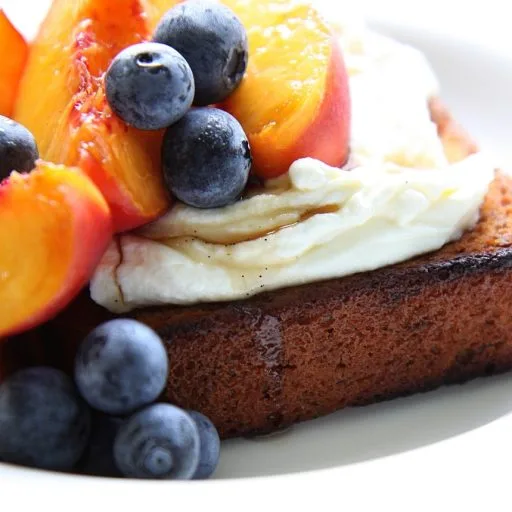
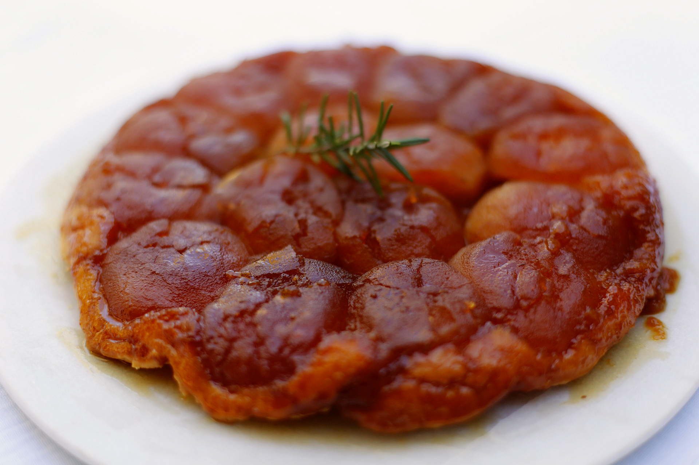
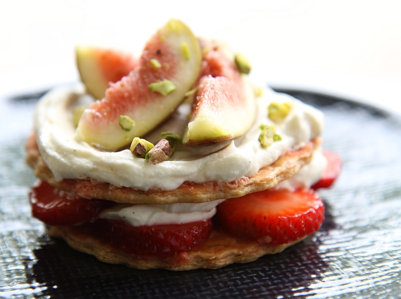

Welcome to Simple food. Delicious, simple to prepare recipes that celebrate fresh seasonal ingredients, and the joy of cooking and eating.
This month I’m featuring recipes that highlight fruit as a main ingredient. With natural sweetness and beautiful flavours, whatever fruit is in season should be eaten fresh, but also used sensitively to create both sweet and savoury dishes. Here’s a sample of my favourites. Recipe links below.



- Banana bread with peaches, blueberries and thick yoghurt
- Tarte tatin with rosemary
- Strawberry and fig pastries
- Ricotta and raspberry tarts
- Blueberry and apple crumble
- Plum tart
- Baked rhubarb with vanilla meringue
- Apricot crostata
I’d love to hear if you have tried any of the recipes. Why not share a photo on Facebook or Instagram with the #simplefood and #cookingathome tags.